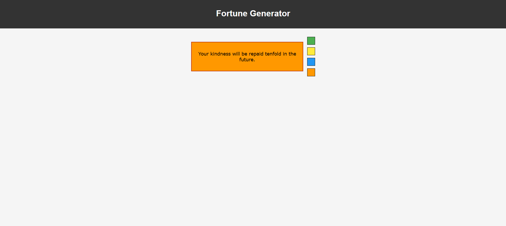

Portfolio Website
Injam Ul Haque - Portfolio Webpage that show About Me, Qualification, Skills.
Live View

Fortune Generator
Displays random fortune messages with customizable appearance. Features.
Live View3-Second Increment Stopwatch
A specialized stopwatch that counts in 3-second increments and automatically stops at 30 seconds. Includes start, stop, and reset functionality with the ability to resume from where it was paused.
Live View
To-DO List
A To-Do List where user can Add task, Checkmark after complete and Delete, will cache on browser even page refresh.
Live View